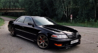
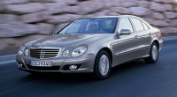
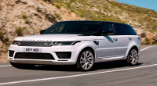
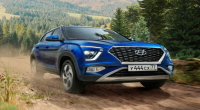
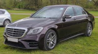
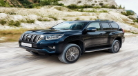
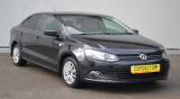

Toyota Mark II
Двигатель 2.5 бензиновый (200 л.с.);
Автоматическая коробка передач;
Задний привод;
Машина 1999 года выпуска, была куплена в 2015 году;
Койловеры Tein type flex;
Передние суппорта Celsior ucf21 4pot;
Передние тормозные диски Brembo 315mm;
Колесные диски work emotion t7r r18 9,5jj et30 от WorldWheels;
Цена: 3 800 000т

Mercedes-Benz E-Класс 320 III (W211, S211)
Год выпуска 2002;
Пробег 305 000 км;
Кузов Седан;
Цвет Серебристый;
Двигатель 3.2 л / 224 л.с. / Бензин;
Комплектация 44 опции;
Коробка Автоматическая;
Привод Задний;
Цена: 4 000 000т

Land Rover Range Rover Sport II
Год выпуска 2014;
Пробег 65 555 км;
Кузов Внедорожник 5 дв.;
Цвет Белый;
Двигатель 3.0 л / 292 л.с. / Дизель;
Комплектация 68 опций;
Коробка Автоматическая;
Привод Полный;
Цена: 16 000 000т

Hyundai Creta II
Кузов Внедорожник 5 дв.;
Комплектация Classic;
Двигатель 1.6 л / 123 л.с. / бензин;
Коробка Механическая;
Привод Передний;
Цвет Чёрный;
Цена; 7 000 000т

Mercedes-Benz S-Класс 400 d Long VI (W222, C217) Рестайлинг
Год выпуска 2019;
Пробег 105 258 км;
Кузов Седан;
Цвет Чёрнный;
Двигатель 2.9 л / 340 л.с. / Дизель;
Комплектация S 400d 4MATIC;
Коробка Автоматическая;
Привод Полный;
Руль Левый;
Цена: 40 000 000т

Toyota Land Cruiser 200 Series Рестайлинг 2
Год выпуска 2020;
Пробег 22 658 км;
Кузов Внедорожник 5 дв.;
Цвет Чёрный;
Двигатель 4.5 л / 249 л.с. / Дизель;
Комплектация 77 опций;
Коробка Автоматическая;
Привод Полный;
Руль Левый;
Цена: 45 000 000т
BMW X7 30d I (G07)
Год выпуска 2020;
Пробег 32 724 км;
Кузов Внедорожник 5 дв.;
Цвет Белый;
Двигатель 3.0 л / 249 л.с. / Дизель;
Комплектация XDrive30d Exclusive;
Kоробка Автоматическая;
Привод Полный;
Руль Левый;
Цена: 45 000 000т

Volkswagen Polo V
Год выпуска 2014;
Пробег 192 250 км;
Кузов Седан;
Цвет Чёрный;
Двигатель 1.6 л / 105 л.с. / Бензин;
Комплектация 32 опции;
Коробка Mеханическая;
Привод Передний;
Цена: 3 000 000т